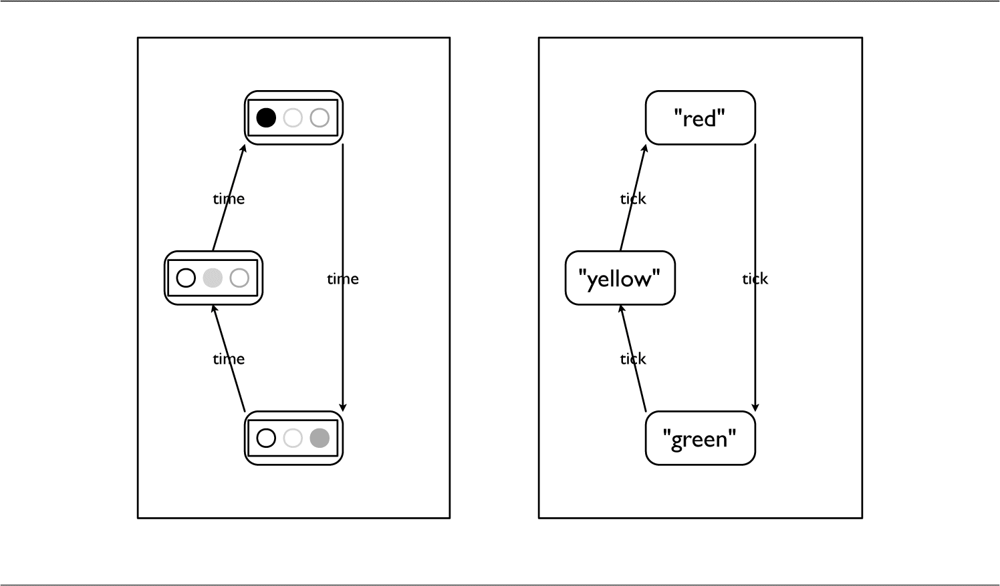
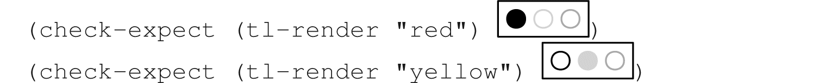
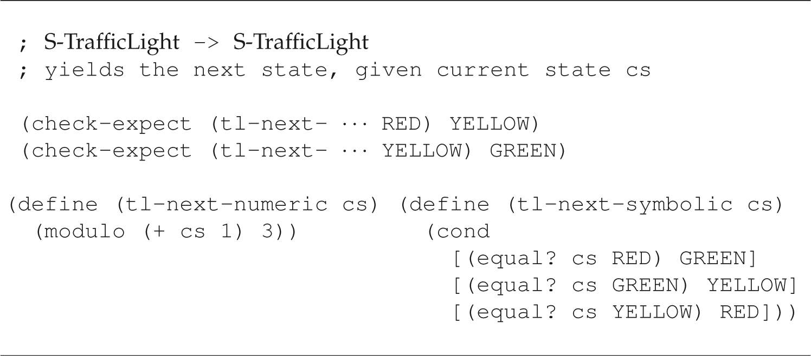
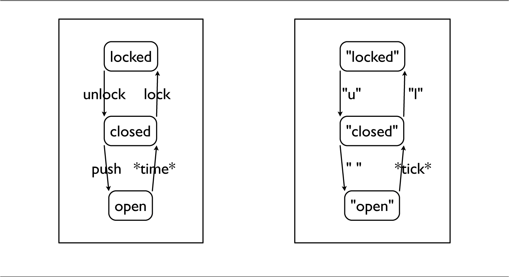
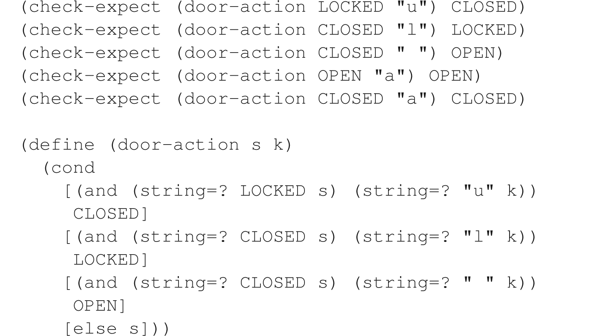
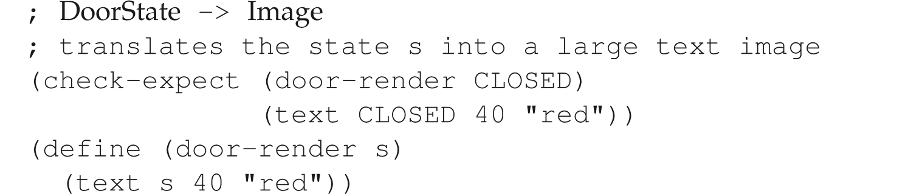

4.7 Finite State Worlds
With the design knowledge in this chapter, you can develop a complete simulation of American traffic lights. When such a light is green and it is time to stop the traffic, the light turns yellow, and, after that, it turns red. When the light is red and it is time to get the traffic going, the light simply switches to green.
The left-hand side of Figure 26 summarizes this description as a state transition diagram. Such a diagram consists of states and arrows that connect these states. Each state depicts a traffic light in one particular configuration: red, yellow, or green. Each arrow shows how the world can change, from which state it can transition to another state. Our sample diagram contains three arrows, because there are three possible ways in which the traffic light can change. Labels on the arrows indicate the reason for changes; a traffic light transitions from one state to another as time passes.

Figure 26: How a traffic light functions
In many situations, state transition diagrams have only a finite number of states and arrows. Computer scientists call such diagrams finite state machines (FSM), also known as finite state automata (FSA). Despite their simplicity, FSMs/FSAs play an important role in computer science.
To create a world program for an FSA, we must first pick a data representation for the possible “states of the world,” which, according to chapter 3.6, represents those aspects of the world that may change in some ways as opposed to those that remain the same. In the case of our traffic light, what changes is the color of the light, that is, which bulb is turned on. The size of the bulbs, their arrangement (horizontal or vertical), and other aspects don’t change. Since there are only three states, we reuse the string-based data definition of TrafficLight from above.
The right-hand side of figure 26 is a diagrammatic interpretation of the TrafficLight data definition. Like the diagram in figure 26, it consists of three states, arranged in such a way that it is easy to view each data element as a representation of a concrete configuration. Also, the arrows are now labeled with tick to suggest that our world program uses the passing of time as the trigger that changes the state of the traffic light. If we wanted to simulate a manually operated light, we might choose transitions based on keystrokes.
Now that we know how to represent the states of our world, how to go from one to the next, and that the state changes at every tick of the clock, we can write down the signature, a purpose statement, and a stub for the two functions we must design:
; TrafficLight -> TrafficLight
; yields the next state, given current state cs
(define (tl-next cs) cs)
; TrafficLight -> Image
; renders the current state cs as an image
(define (tl-render current-state)
(empty-scene 90 30))
Preceding sections use the names render and next to name the functions that translate a state of the world into an image and that deal with clock ticks. Here we prefix these names with some syllable that suggests to which world the functions belong. Because the specific functions have appeared before, we leave them as exercises.
Exercise 59. Finish the design of a world program that simulates the traffic light FSA. Here is the main function:
; TrafficLight -> TrafficLight
; simulates a clock-based American traffic light
(define (traffic-light-simulation initial-state)
(big-bang initial-state
[to-draw tl-render]
[on-tick tl-next 1]))
The function’s argument is the initial state for the big-bang expression, which tells DrRacket to redraw the state of the world with tl-render and to handle clock ticks with tl-next. Also note that it informs the computer that the clock should tick once per second.
Complete the design of tl-render and tl-next. Start with copying TrafficLight, tl-next, and tl-render into DrRacket’s definitions area.
Here are some test cases for the design of the latter:

Your function may use these images directly. If you decide to create images with the functions from the 2htdp/image library, design an auxiliary function for creating the image of a one-color bulb. Then read up on the place-image function, which can place bulbs into a background scene. 
Exercise 60. An alternative data representation for a traffic light program may use numbers instead of strings:
; An N-TrafficLight is one of:
; -- 0 interpretation the traffic light shows red
; -- 1 interpretation the traffic light shows green
; -- 2 interpretation the traffic light shows yellow
It greatly simplifies the definition of tl-next:
; N-TrafficLight -> N-TrafficLight
; yields the next state, given current state cs
(define (tl-next-numeric cs) (modulo (+ cs 1) 3))
Reformulate tl-next’s tests for tl-next-numeric.
Does the tl-next function convey its intention more clearly than the tl-next-numeric function? If so, why? If not, why not?
Exercise 61. As chapter 3.4 says, programs must define constants and use names instead of actual constants. In this spirit, a data definition for traffic lights must use constants, too:
(define RED 0) would use.
(define GREEN 1)
(define YELLOW 2)
; An S-TrafficLight is one of:
; -- RED
; -- GREEN
; -- YELLOW
This form of data definition is what a seasoned designer would use.
If the names are chosen properly, the data definition does not need an interpretation statement.
Figure 27 displays two different functions that switch the state of a traffic light in a simulation program. Which of the two is properly designed using the recipe for itemization? Which of the two continues to work if you change the constants to the following
(define RED "red")
(define GREEN "green")
(define YELLOW "yellow")

Figure 27: A symbolic traffic light
Does this help you answer the questions?
Aside The equal? function in figure 27 compares two arbitrary values, regardless of what these values are. Equality is a complicated topic in the world of programming. End
Here is another finite state problem that introduces a few additional complications:
Sample Problem Design a world program that simulates the working of a door with an automatic door closer. If this kind of door is locked, you can unlock it with a key. An unlocked door is closed, but someone pushing at the door opens it. Once the person has passed through the door and lets go, the automatic door takes over and closes the door again. When a door is closed, it can be locked again.
To tease out the essential elements, we again draw a transition diagram; see the left-hand side of figure 27. Like the traffic light, the door has three distinct states: locked, closed, and open. Locking and unlocking are the activities that cause the door to transition from the locked to the closed state and vice versa. As for opening an unlocked door, we say that one needs to push the door open. The remaining transition is unlike the others because it doesn’t require any activities by anyone or anything else. Instead, the door closes automatically over time. The corresponding transition arrow is labeled with *time* to emphasize this.
Following our recipe, we start with a translation of the three real-world states into BSL data:
(define LOCKED "locked") ; A DoorState is one of:
(define CLOSED "closed") ; -- LOCKED
(define OPEN "open") ; -- CLOSED
; -- OPEN
We also keep in mind the lesson of exercise 61, namely, that it is best to define symbolic constants and formulate data definitions in terms of such constants.
The next step of a world design demands that we translate the chosen actions in our domain—the arrows in the left-hand diagram—into interactions with the computer that the 2htdp/universe library can deal with. Our pictorial representation of the door’s states and transitions, specifically the arrow from open to closed, suggests the use of clock ticks. For the other arrows, we could use either key presses or mouse clicks. Let’s use three keystrokes: "u" for unlocking the door, "l" for locking it, and the space bar " " for pushing it open. The right-hand-side diagram of figure 28 expresses these choices graphically; it translates the state-machine diagram from the world of information into the world of data in BSL.

Figure 28: A transition diagram for a door with an automatic closer
Once we have decided to use the passing of time for one action and key presses for the others, we must design functions that render the current state of the world—represented as DoorState—and that transform it into the next state of the world. And that, of course, amounts to a wish list of big-bang functions:
• door-closer, which closes the door during one tick;
• door-action, which acts on it in response to pressing a key; and
• door-render, which translates the current state into an image.
Stop! Formulate appropriate signatures.
We start with door-closer. Since door-closer acts as the on-tick handler, we get its signature from our choice of DoorState as the collection of world states:
; DoorState -> DoorState
; closes an open door over the period of one tick
(define (door-closer state-of-door) state-of-door)
Making up examples is trivial when the world can only be in one of three states. Here we use a table to express the basic idea, just like in some of the mathematical examples given above:
given state |
desired state |
LOCKED |
LOCKED |
CLOSED |
CLOSED |
OPEN |
CLOSED |
Stop! Express these examples as BSL tests.
The template step demands a conditional with three clauses:
(define (door-closer state-of-door)
(cond
[(string=? LOCKED state-of-door) …]
[(string=? CLOSED state-of-door) …]
[(string=? OPEN state-of-door) …]))
and the process of turning this template into a function definition is dictated by the examples:
(define (door-closer state-of-door)
(cond
[(string=? LOCKED state-of-door) LOCKED]
[(string=? CLOSED state-of-door) CLOSED]
[(string=? OPEN state-of-door) CLOSED]))
Don’t forget to run your tests.
The second function, door-action, takes care of the remaining three arrows of the diagram. Functions that deal with keyboard events consume both a world and a key event, meaning the signature is as follows:
; DoorState KeyEvent -> DoorState
; turns key event k into an action on state s
(define (door-action s k)
s)
We once again present the examples in tabular form:
given state |
given key event |
desired state |
LOCKED |
"u" |
CLOSED |
CLOSED |
"l" |
LOCKED |
CLOSED |
" " |
OPEN |
OPEN |
— |
OPEN |
The examples combine information from our drawing with the choices we made about mapping actions to keyboard events. Unlike the table of examples for traffic light, this table is incomplete. Think of some other examples; then consider why our table suffices.
From here, it is straightforward to create a complete design:

Note the use of and to combine two conditions: one concerning the current state of the door and the other concerning the given key event.
Lastly, we need to render the state of the world as a scene:

This simplistic function uses large text. Here is how we run it all:
; DoorState -> DoorState
; simulates a door with an automatic door closer
(define (door-simulation initial-state)
(big-bang initial-state
[on-tick door-closer]
[on-key door-action]
[to-draw door-render]))
Now it is time for you to collect the pieces and run them in DrRacket to see whether it all works.
Exercise 62. During a door simulation the “open” state is barely visible. Modify door-simulation so that the clock ticks once every three seconds. Rerun the simulation.